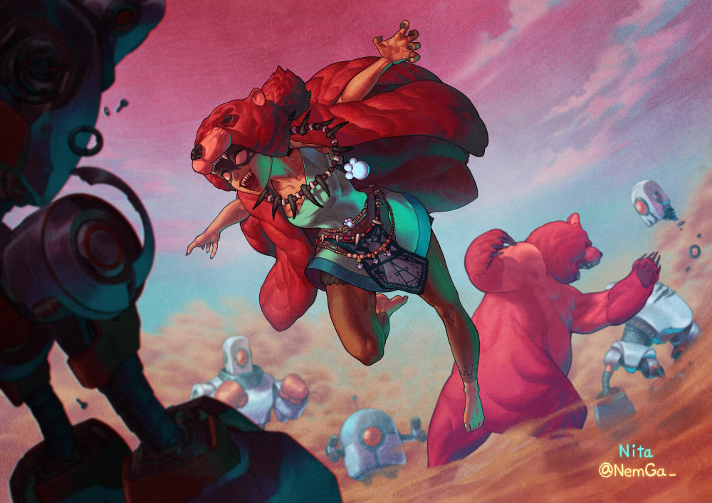
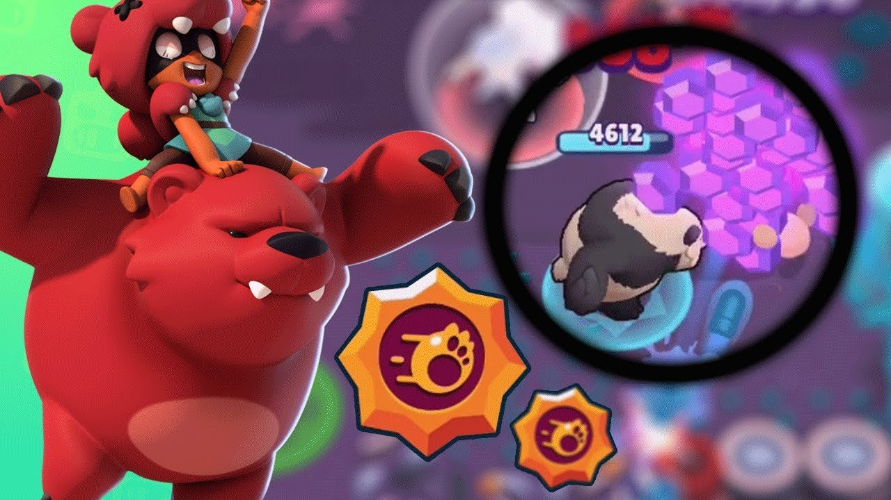

Nita
Acerca

Este es un luchador de mediana distancia, con buena salud, cuya fortaleza radica en como usa a su mascota (pasiva), de ahí que sea muy seleccionado en modos donde es necesario zonear o principalmente hacer mayor DPS.
| Stat | Descripción |
|---|---|
| Vida | 7.900 |
| Velocidad de movimiento | Normal |
| Daño | 1.920 |
| Rango de ataque | Normal |
| Velocidad de recarga | Muy rápido |
La pasiva de este personaje es colocar un oso que no es muy rápido pero si tiene mucha vida y que perseguirá al enemigo más cercano a él.
| Vida del oso | 7.900 |
| Movimiento del oso | Lento |
| Daño del osos | 790 |
| Rango | Corto |

Sus power stars y gadgets son unicos para este perosnaje:
| Power Star | Descripción | Gadget | Descripción |
|---|---|---|---|
| Bear with me | Los ataques del oso curarán a Nita y los de Nita curarán al oso. | Bear paws | Stunea a todos los enemigos ceranos al oso. |
| Hyper bear | El oso ataca un 60% más rápido. | Faux fur | Por 3 segundosel oso reduce el daño recibido en un 35% |
Abajo se ve una demostración del barwler en acción.